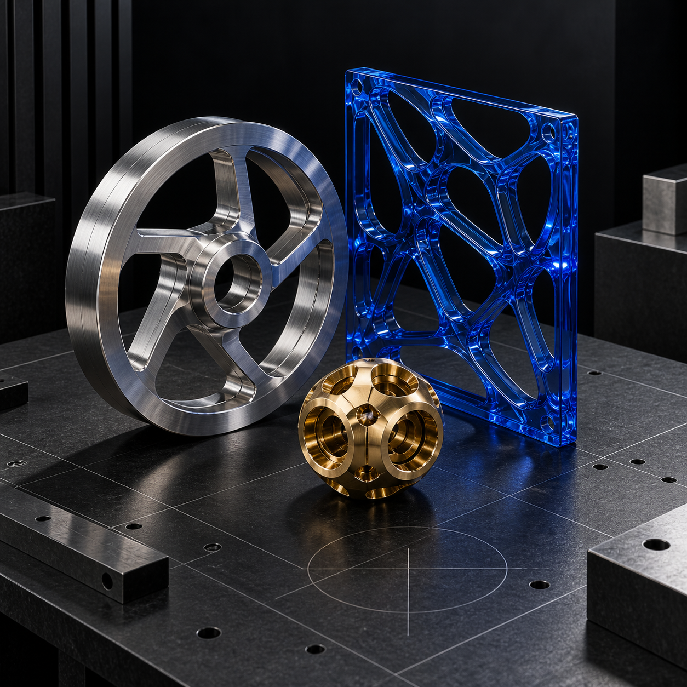
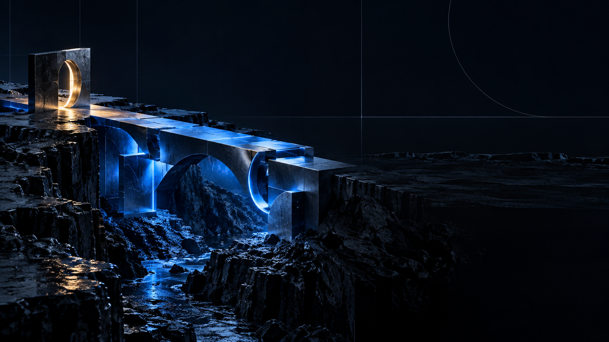

“Stay hungry. Stay foolish.”Steve Jobs ↗
 Begin
Begin
Independent studio / India
Dyev builds its own products, systems, ventures and useful experiments.
01 / A working point of view
We are here to turn restlessness into things with shape: software, businesses, media, tools, and whatever else earns its place in the world. The output matters. So does learning how to make it.

03 / Fields of play

04 / The long game
Momentum is not noise. It is the compound effect of deciding, building, learning and going again.
05 / The Dyev object
Every project begins with a small spark of intent. We give it structure, velocity, and somewhere useful to go.
Signals we keep close
“Stay hungry. Stay foolish.”Steve Jobs ↗

“Our industry does not respect tradition. It only respects innovation.”Satya Nadella ↗

“If you don't make a mistake, you're not working on hard enough problems.”Jensen Huang ↗
Ideas do not become things
by staying ideas.